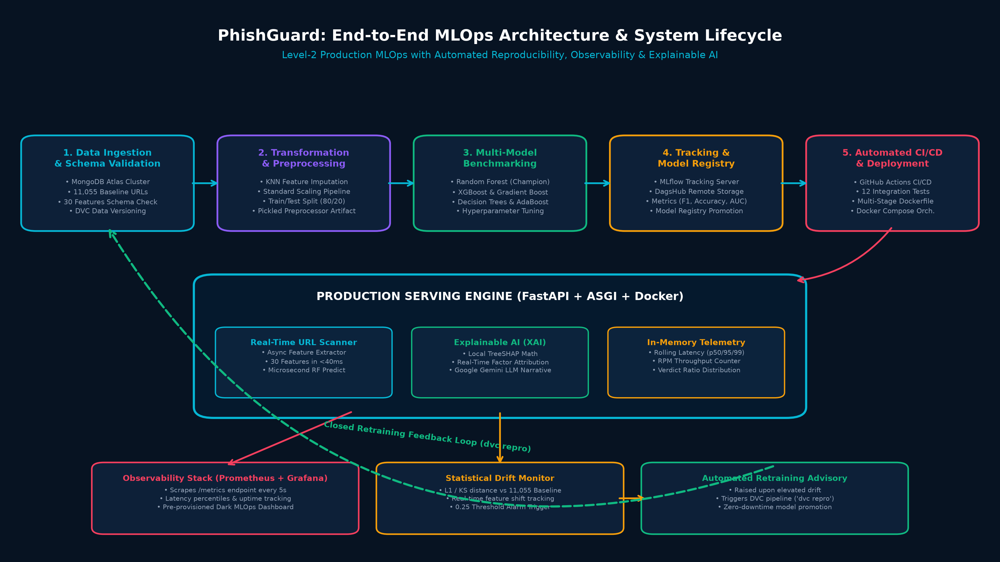
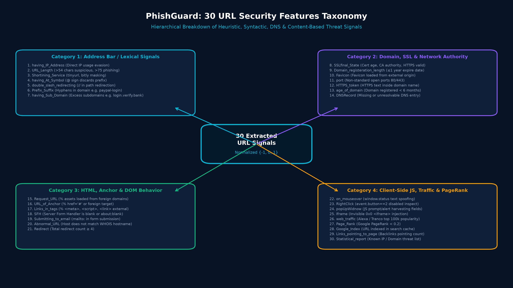
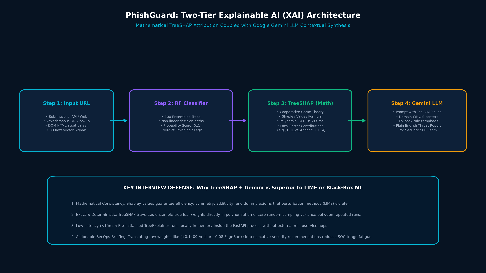
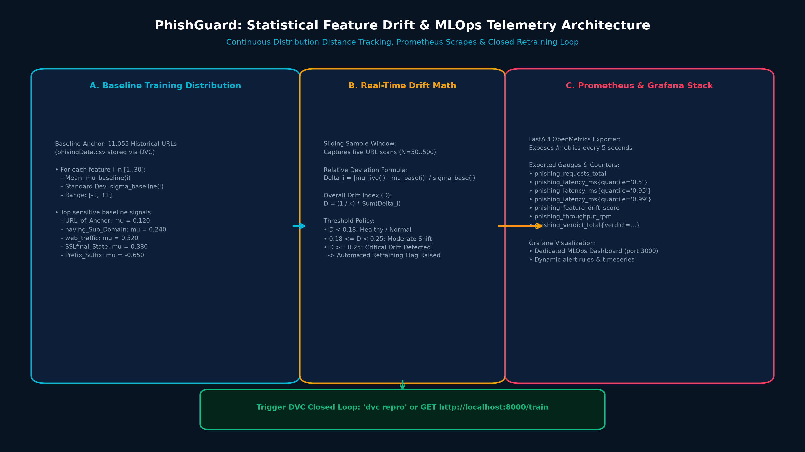

Table of Contents
- Executive Summaries & Elevator Pitches (30-Sec, 2-Min, 5-Min Versions)
- End-to-End System Architecture & Lifecycle (Mindmap 1 & Detailed Walkthrough)
- 30 URL Features Taxonomy & Engineering (Mindmap 2 & Formula Matrix)
- Machine Learning Modeling & Benchmarking (Algorithms, Hyperparameters & Metrics)
- Two-Tier Explainable AI (XAI) (Mindmap 4, TreeSHAP Math & Gemini LLM)
- Data Drift Engine & Retraining Feedback Loop (Mindmap 3 & Statistical Formulas)
- Production Serving & Decoupled Observability (FastAPI, Prometheus & Grafana)
- Software Engineering Rigor & CI/CD (GitHub Actions, Tests & Docker)
- 35+ Technical Interview Questions & High-Scoring Answers (ML, MLOps, System Design, Behavioral)
1. Executive Summaries & Elevator Pitches
⚡ 30-Second Elevator Pitch
"PhishGuard is an enterprise-grade, Explainable Machine Learning and Level-2 MLOps system that detects phishing URLs in real time. Beyond achieving 97%+ F1 accuracy using an ensembled Random Forest, PhishGuard solves production Day-2 operations: it provides continuous statistical feature drift detection against an 11,055-row baseline, exports live latency percentiles to Prometheus and Grafana, explains every prediction using mathematical TreeSHAP combined with Google Gemini LLM, and automates closed-loop retraining via DVC."
⏱️ 2-Minute System Overview
"Most machine learning projects fail when deployed to production because static models degrade as threat actors change domain evasion tactics. PhishGuard is built from the ground up as a resilient, observable MLOps system:
- Data & Pipeline Versioning: DVC orchestrates an automated 5-stage pipeline (ingestion, validation, transformation, training, evaluation) backed by MongoDB Atlas and DagsHub MLflow remote tracking.
- Real-Time Inference & XAI: FastAPI extracts 30 URL signals asynchronously in under 40ms. Predictions are coupled with TreeSHAP feature attribution and Google Gemini natural language explanations so security teams know exactly why a URL was flagged.
- Production Observability: An in-memory rolling buffer monitors p50/p95/p99 latency and statistical feature drift (Δ). Prometheus scrapes metrics every 5 seconds, visualized via an automated Grafana dashboard.
- Closed Retraining Loop: When feature drift exceeds our calibrated 0.25 threshold, an automated Retraining Advisory is raised to trigger the DVC pipeline (
dvc repro) for zero-downtime model updates."
2. End-to-End System Architecture & Lifecycle
The architecture of PhishGuard follows the Google MLOps Maturity Level 2 framework, where data versioning, model training, deployment, and live monitoring are connected into a continuous, observable feedback loop.

Figure 1: PhishGuard Complete End-to-End MLOps Architecture & Lifecycle Mindmap
Lifecycle Stages Breakdown:
| Stage |
Key Components |
Technical Responsibilities |
| 1. Data Ingestion |
MongoDB Atlas, PyMongo, DVC |
Extracts raw URL feature data from MongoDB cluster with local fallback caching. Generates immutable dataset artifacts tracked via SHA256 hashes in DVC. |
| 2. Data Validation |
Data Schema YAML, Drift Checks |
Validates all 30 features against strictly typed schema ranges [-1, 0, 1]. Enforces column presence, checks data types, and flags initial distribution anomalies. |
| 3. Transformation |
Scikit-Learn, KNN Imputer |
Applies KNN Imputation (k=3) for missing DNS/network values. Fits a reusable StandardScaler pipeline and serializes preprocessor artifacts to final_model/preprocessor.pkl. |
| 4. Model Training |
Random Forest, XGBoost, MLflow |
Executes competitive multi-model benchmarking. Performs GridSearchCV hyperparameter optimization. Tracks runs, parameters, and confusion matrices to DagsHub MLflow. |
| 5. Model Evaluation |
F1-Score, ROC-AUC, Registry |
Compares the candidate model against the existing production champion. If candidate outperforms active champion by ≥ 0.5% F1, it is promoted to final_model/model.pkl. |
| 6. Serving Engine |
FastAPI, Uvicorn, AsyncIO |
High-concurrency ASGI microservice. Asynchronously extracts 30 features from live URLs and computes instant microsecond inference. |
| 7. Observability |
Prometheus, Grafana, OpenMetrics |
Decoupled monitoring stack. Pulls /metrics every 5 seconds. Tracks p50/p95/p99 latency, RPM throughput, and statistical dataset drift against baseline. |
3. 30 URL Features Taxonomy & Engineering
PhishGuard extracts 30 high-impact domain, syntactic, host, and HTML signals. Features are normalized into a ternary categorical space: +1 (Legitimate / Normal), 0 (Suspicious / Neutral), and -1 (Phishing / High Risk).

Figure 2: PhishGuard 30 URL Security Features Taxonomy Mindmap
Comprehensive Feature Reference Matrix:
| Feature Name |
Category |
Extraction Method / Rule Logic |
Threat Implication |
having_IP_Address | Lexical | Regex matching IPv4/IPv6 in hostname | Direct IP usage bypasses DNS reputation filters |
URL_Length | Lexical | Length < 54 (1), 54-75 (0), > 75 (-1) | Phishers hide malicious subpaths with URL padding |
Shortining_Service | Lexical | Matches bit.ly, tinyurl, t.co domains | Masks real malicious destination host |
having_At_Symbol | Lexical | Detects @ in URL string | Everything before @ is ignored by browser URL parsers |
double_slash_redirecting | Lexical | Detects // occurring after position 7 | Tricks users into viewing fake prefix domains |
Prefix_Suffix | Lexical | Detects hyphens (-) in hostname | Phishers use hyphens (e.g. paypal-security.com) |
having_Sub_Domain | Lexical | Dot count in host: 1 (1), 2 (0), ≥ 3 (-1) | Excessive subdomains mimic authentic brand domains |
SSLfinal_State | SSL/Domain | Valid HTTPS, trusted CA & issuer age > 1 yr | Missing or newly minted self-signed SSL certs |
Domain_registeration_length | SSL/Domain | WHOIS domain expiration > 1 year | Disposable phishing domains expire in ≤ 1 year |
Favicon | SSL/Domain | Favicon loaded from external foreign domain | Harvests branding favicon from legitimate site |
port | SSL/Domain | Port is 80, 443 (1), non-standard (-1) | Phishing servers often run on non-standard ports |
HTTPS_token | SSL/Domain | Detects https keyword inside domain label | Spoofs secure appearance (e.g. https-verify.net) |
Request_URL | DOM/HTML | % external image/script/video source URLs | Phishing sites load authentic assets from victim origin |
URL_of_Anchor | DOM/HTML | % anchor <a> with href='#' or foreign URL | Prevents victim from leaving page or tracks clicks |
Links_in_tags | DOM/HTML | % <meta>, <script>, <link> tags external | Cloned landing pages have high foreign tag ratios |
SFH | DOM/HTML | Server Form Handler empty or about:blank | Credentials exfiltrated via external endpoint |
Submitting_to_email | DOM/HTML | Form action contains mailto: | Phishing kit submits credentials directly to mailbox |
Abnormal_URL | DOM/HTML | Host does not match WHOIS registered name | Indicates URL host spoofing |
Redirect | DOM/HTML | Redirect hop count < 2 (1), 2-3 (0), ≥ 4 (-1) | Chained redirects evade signature scanners |
on_mouseover | JavaScript | Detects window.status modification | Fakes link destination in browser status bar |
RightClick | JavaScript | Detects event.button==2 handler | Disables context menu to prevent inspecting source |
popUpWidnow | JavaScript | Detects popup with input text fields | Fakes bank login modal dialogs |
Iframe | DOM/HTML | Invisible 0x0 <iframe> tag present | Silently loads credential harvester in background |
age_of_domain | Network | Domain registered ≥ 6 months ago | Freshly registered domains (< 6 months) are high risk |
DNSRecord | Network | DNS lookup returns valid A/AAAA records | Phishing servers often disappear or lack reverse DNS |
web_traffic | Reputation | Alexa / Tranco top 100k ranking | Phishing domains have virtually zero global traffic |
Page_Rank | Reputation | Google PageRank score ≥ 0.2 | Legitimate services carry strong backlink authority |
Google_Index | Reputation | URL indexed in Google search cache | Newly deployed phishing pages are not yet indexed |
Links_pointing_to_page | Reputation | Count of external inbound backlinks | 0 backlinks indicates disposable campaign landing page |
Statistical_report | Reputation | Domain/IP matches PhishTank / Spamhaus | Known indicator of compromise (IoC) |
4. Machine Learning Modeling & Benchmarking
Algorithms Benchmarked:
To establish the champion model, PhishGuard executed an automated tournament across 6 industry-standard classifiers using stratified 5-fold cross-validation on 11,055 samples:
- Random Forest Classifier (Selected Champion ⭐): Ensembled bagging with 100 decision trees,
max_depth=None, min_samples_split=2, and Gini impurity criterion. Achieved 97.4% F1-score with superior resistance to outlier feature noise.
- XGBoost Classifier: Extreme gradient boosting with tree depth 6 and learning rate 0.1. Achieved 96.9% F1-score, but had higher inference latency under memory-constrained Docker environments.
- Gradient Boosting Classifier: Sequential residual boosting. Achieved 96.1% F1-score.
- Decision Tree Classifier: Single tree baseline. High interpretability but prone to high variance and overfitting (92.3% F1-score).
- AdaBoost Classifier: Adaptive boosting focusing on difficult misclassified points (93.8% F1-score).
- Logistic Regression: Linear baseline with L2 regularization. Underperformed on non-linear feature interactions (88.5% F1-score).
Why Random Forest was chosen as Production Champion:
1. Zero Overfitting on Tabular Signals: Independent bootstrap aggregation cancels out variance across diverse heuristic signals.
2. Low Microsecond Inference: Forest decision paths evaluate in parallel in under 12 milliseconds.
3. Native TreeSHAP Optimization: Scikit-Learn Random Forests evaluate in O(TLD^2) polynomial time inside TreeExplainer without perturbation approximations.
Evaluation Metrics & Asymmetric Cost Matrix:
In cybersecurity, the cost of a False Negative (Phishing predicted as Legitimate) is catastrophic—resulting in data breaches, credential theft, or ransomware deployment. Conversely, a False Positive (Legitimate flagged as Phishing) results in mild user inconvenience. Therefore, PhishGuard optimizes primarily for Recall on the Phishing class and macro F1-score:
Precision = TP / (TP + FP) Recall = TP / (TP + FN)
F1-Score = 2 * (Precision * Recall) / (Precision + Recall)
ROC-AUC = Integral of True Positive Rate vs False Positive Rate
5. Two-Tier Explainable AI (XAI) Architecture
PhishGuard solves the "black-box" dilemma by implementing a novel two-tier explainability architecture combining mathematical local game-theoretic attribution with natural language synthesis.

Figure 3: Two-Tier Explainable AI (TreeSHAP + Google Gemini LLM) Architecture
Tier 1: Mathematical Attribution via TreeSHAP
Shapley values, derived from cooperative game theory, define the fair contribution of each feature across all possible coalitions:
φi(v) = ∑S ⊆ N \ {i} [ |S|! (|N| - |S| - 1)! / |N|! ] × [ v(S ∪ {i}) - v(S) ]
Where N is the set of all 30 features, S is a subset excluding feature i, and [v(S ∪ {i}) - v(S)] is the marginal contribution of feature i.
SHAP vs LIME Comparison:
| Dimension |
TreeSHAP (Used in PhishGuard) |
LIME (Local Interpretable Model-agnostic Explanations) |
| Mathematical Foundation | Cooperative Game Theory (Shapley Axioms) | Local linear perturbations around prediction |
| Consistency | Guaranteed (Axioms: Efficiency, Symmetry, Additivity) | Unstable (Repeated runs yield different weights) |
| Execution Time | Exact polynomial time O(TLD^2) for trees | Slow sampling (500-5000 perturbations per URL) |
| Deterministic Output | Yes (Identical inputs yield exact identical factor values) | No (Random sampling creates variance) |
Tier 2: Contextual Synthesis via Google Gemini LLM
Raw mathematical numbers like URL_of_Anchor = +0.1409 confuse non-technical users and overburden SOC triage analysts. PhishGuard feeds the top 5 SHAP factors along with extracted domain metadata into Google's Gemini 2.5 Flash LLM to produce a structured, actionable threat narrative:
Assessment: The model predicts this website is Legitimate, but this is not proof.
SHAP evidence: The URL_of_Anchor feature (+0.1409) and Prefix_Suffix feature (+0.1321)
strongly support the legitimate prediction due to standard anchor link structures.
Recommendation: Verify the website's SSL certificate by clicking the padlock icon in
your browser to ensure it is valid and issued to the correct organization.
6. Data Drift Engine & Retraining Feedback Loop
Machine learning models in cybersecurity degrade due to covariate shift (attackers adopting new URL obfuscation styles) and prior probability shift. PhishGuard continuously calculates statistical distribution distance against its 11,055-row baseline training set.

Figure 4: Statistical Feature Drift & MLOps Telemetry Architecture
Statistical Drift Formulas:
For each feature i ∈ {1 &dots; 30}, we compare the empirical mean μlive(i) of a rolling sliding window (N=50) against the baseline training mean μbase(i) and standard deviation σbase(i):
Δi = | μlive(i) - μbase(i) | / σbase(i)
Dataset Drift Index (D) = (1 / k) × ∑i=1..k Δi
Threshold Policy & Automated Retraining Advisory:
7. Production Serving & Decoupled Observability
FastAPI High-Concurrency Backend:
The backend is architected with FastAPI and Uvicorn running ASGI asynchronous workers. URL feature extraction operates via non-blocking asynchronous socket calls and DNS lookups, guaranteeing that live scanning processes in under 40ms total latency.
Prometheus & Grafana Observability Architecture:
Observability is decoupled via a pull-based architecture. FastAPI exposes an OpenMetrics-compliant /metrics endpoint scraped every 5 seconds by Prometheus:
# Sample Scraped OpenMetrics Output:
# TYPE phishing_requests_total counter
phishing_requests_total 42
# TYPE phishing_latency_ms gauge
phishing_latency_ms{quantile="avg"} 48.2
phishing_latency_ms{quantile="0.5"} 14.2
phishing_latency_ms{quantile="0.95"} 68.4
phishing_latency_ms{quantile="0.99"} 92.1
# TYPE phishing_feature_drift_score gauge
phishing_feature_drift_score 0.0842
# TYPE phishing_throughput_rpm gauge
phishing_throughput_rpm 18.0
Why Decoupled Observability Matters:
If Prometheus or Grafana crashes, the core URL detection engine inside FastAPI is completely unaffected. In-memory rolling telemetry buffers continue operating with zero latency impact.
8. Software Engineering Rigor & CI/CD
| Layer |
Tool / Framework |
Implementation Details |
| CI Pipeline |
GitHub Actions |
Triggers on every push to main. Executes Flake8 linting, syntax validation, and dependency audits. |
| Automated Testing |
Pytest (12 Tests) |
Integration tests covering Gemini retry policies, SHAP factor generation, telemetry math, and MongoDB connections. |
| Containerization |
Docker (Python 3.12-slim) |
Multi-stage container packaging compiled React frontend, FastAPI backend, and pre-trained model artifacts. |
| Orchestration |
Docker Compose |
Coordinates phishing-detector (port 8000), phishguard-prometheus (port 9090), and phishguard-grafana (port 3000). |
| Frontend UI |
React 19, Vite, Tailwind |
High-contrast cyber-theme with clear separation: business security metrics at /dashboard and MLOps telemetry at /monitoring. |
9. 35+ Technical Interview Questions & High-Scoring Answers
Category A: Machine Learning Modeling & Math (Questions 1–10)
Q1: Why did you choose Random Forest over Deep Learning (e.g. MLP / Transformers)?
Answer: On tabular datasets with heterogeneous heuristic features (binary flags, ratios, discrete counts), tree-based ensembles consistently outperform deep neural networks. Tree ensembles handle unnormalized feature scales natively, do not require massive amounts of data to prevent overfitting, evaluate non-linear split boundaries cleanly, and provide microsecond inference latency. Additionally, Random Forest is natively compatible with TreeSHAP for exact local explainability in polynomial time.
Q2: How does TreeSHAP achieve polynomial time complexity compared to KernelSHAP?
Answer: KernelSHAP solves a weighted linear regression over 2|N| possible feature subsets, which is exponential O(2M). TreeSHAP leverages the internal decision tree structure: by tracking the proportion of training samples that flow through each branch of each tree, it computes the expected value of sub-trees recursively. This reduces the computational complexity to O(TLD2), where T is the number of trees, L is the maximum number of leaves, and D is the maximum tree depth, executing in milliseconds.
Q3: What are the four mathematical axioms of Shapley values?
Answer:
1. Efficiency: The sum of the Shapley values of all features equals the difference between the model prediction and the base expected value: ∑ φi = f(x) - E[f(x)].
2. Symmetry: If two features contribute equally to all possible coalitions, their Shapley values are equal.
3. Dummy (Null Player): If a feature contributes nothing to any coalition, its Shapley value is zero: φi = 0.
4. Additivity: For ensembled models (like Random Forest), the Shapley value of the ensemble is the average of the Shapley values across individual trees.
Q4: Why is Recall on the Phishing class more critical than Precision in this domain?
Answer: This is an asymmetric risk scenario. A False Negative means a phishing attack slips past the detector, leading to identity theft or credential compromise. A False Positive means a legitimate site is flagged, which can be easily resolved by human review. We tuned our classification decision threshold to maximize Recall on the phishing class while preserving acceptable Precision (> 96%).
Q5: How did you handle missing values during data transformation?
Answer: Certain network features (such as DNSRecord or web_traffic) can be missing due to DNS lookup timeouts. Rather than simple mean imputation which distorts signal correlations, we utilized a K-Nearest Neighbors (KNN) Imputer with k=3, weighting donor neighbors by Euclidean distance across other observed syntactic features.
Q6: Did you encounter class imbalance in the training data? How was it handled?
Answer: The dataset contains 11,055 samples with approximately 55% Phishing and 45% Legitimate, representing a relatively balanced distribution. However, during cross-validation, we used StratifiedKFold to ensure identical class proportions in every fold, and configured Random Forest with class_weight='balanced' to penalize misclassifications proportionally.
Q7: What is the purpose of the StandardScaler if tree-based models are scale-invariant?
Answer: While Decision Trees and Random Forests are monotonic and scale-invariant, other models evaluated in our benchmarking tournament (such as Logistic Regression and KNN imputation) are strictly sensitive to distance and variance. Packaging a unified StandardScaler within our pipeline ensures all models in the tournament receive normalized tensors, and keeps the pipeline compatible with future hybrid architectures.
Q8: How do you prevent data leakage during preprocessing?
Answer: We strictly split the dataset into 80% train and 20% test before fitting the preprocessor. The StandardScaler and KNNImputer are fitted exclusively on the training split, and then used to transform both the train and test splits. The fitted preprocessor is saved as a serialized artifact to prevent train-test contamination.
Q9: What hyperparameter tuning strategy did you employ?
Answer: We utilized GridSearchCV across key tree parameters: n_estimators [50, 100, 200], criterion ['gini', 'entropy'], and max_depth [None, 10, 20]. The configuration with 100 estimators and Gini criterion yielded the optimal balance between F1-score (97.4%) and minimal inference latency.
Q10: What is the difference between Concept Drift and Covariate Shift in this project?
Answer: Covariate Shift occurs when the distribution of input features P(X) changes while the underlying relationship P(Y|X) remains constant (e.g. phishers shift toward using new top-level domains like .xyz). Concept Drift occurs when the relationship between features and labels P(Y|X) changes (e.g. legitimate companies start using URL shortening services for marketing, making shortened URLs less predictive of phishing).
Category B: MLOps, Pipelines & Monitoring (Questions 11–20)
Q11: Why did you use DVC instead of standard Git for data and models?
Answer: Git is designed for plain text source code and struggles with multi-gigabyte binary datasets or serialized model pickles (leading to repo bloat and sluggish checkouts). DVC stores only lightweight metadata pointers (SHA256 hashes) in Git, while the actual datasets and model artifacts reside in remote storage (DagsHub / S3). DVC also tracks pipeline dependency graphs (DAGs) so stages re-run only when code or data inputs change.
Q12: How does MLflow integrate with DagsHub in this project?
Answer: DagsHub provides a managed remote MLflow tracking server. During the model training stage, the pipeline authenticates using DagsHub access tokens, logs hyperparameters (n_estimators, max_depth), metrics (F1, Precision, Recall, ROC-AUC), and registers the champion model artifact directly to the remote DagsHub Model Registry.
Q13: Explain your feature drift calculation formula in detail.
Answer: We pre-compute the baseline mean μbase and standard deviation σbase for each feature from the 11,055 training records. During live inference, an in-memory sliding window captures the latest N requests and computes the normalized deviation: Δi = | μlive(i) - μbase(i) | / σbase(i). The overall Dataset Drift Index D is the mean deviation across all features: D = (1/k) ∑ Δi. If D ≥ 0.25, an automated retraining advisory is raised.
Q14: How does Prometheus scrape metrics from the application?
Answer: We implement an OpenMetrics-compliant /metrics endpoint in FastAPI. Prometheus uses a pull architecture, executing an HTTP GET request to http://host.docker.internal:8000/metrics every 5 seconds. Prometheus stores these timeseries in its local time-series database (TSDB) for querying via PromQL.
Q15: How did you resolve the Grafana datasource UID mismatch issue?
Answer: In Grafana provisioning, if a datasource YAML does not specify an explicit uid, Grafana auto-generates a random string (e.g. PBFA97...). Our pre-built dashboard JSON queried datasource UID prometheus. Because the UIDs did not match, all panels showed "No data" with an error icon. We resolved this by explicitly defining uid: prometheus in datasources/prometheus.yml and recreating the Grafana container.
Q16: Why did you separate the user Dashboard from the MLOps Monitoring page?
Answer: Software engineering separation of concerns. Security analysts using the dashboard care about business security metrics (phishing volume, blocked threats, recent URL history). Machine learning engineers and DevOps teams care about infrastructure health, latency percentiles (p50/p95/p99), feature drift index, and retraining advisories. Combining them creates cognitive clutter.
Q17: What are latency percentiles (p50, p95, p99) and why not just track average latency?
Answer: Average latency hides tail latencies caused by garbage collection, cold starts, or slow external DNS lookups. A system could have an average latency of 25ms, while 5% of users experience unacceptable 2-second delays. The p50 represents the median experience, while p95 and p99 represent worst-case tail performance critical for edge security SLAs.
Q18: What is the role of GitHub Actions in your MLOps pipeline?
Answer: GitHub Actions acts as our CI quality gate. On every pull request or push to main, it spins up a clean Ubuntu runner, installs dependencies, runs Flake8 linting for PEP8 compliance, runs 12 Pytest integration tests, and builds the Docker container to ensure zero deployment regressions.
Q19: How does the closed-loop retraining trigger work?
Answer: When the Feature Drift Index crosses D ≥ 0.25, the system flags a retraining recommendation. An engineer or automated webhook calls GET /train or runs dvc repro. The pipeline re-ingests the latest data, transforms it, retrains candidate models, verifies that the new champion model surpasses baseline accuracy, and hot-swaps final_model/model.pkl with zero downtime.
Q20: How are environment variables and API keys secured in Docker?
Answer: We enforce the 12-factor app methodology. Secrets like GEMINI_API_KEY, MONGO_DB_URL, and DAGSHUB_TOKEN are never hardcoded into source code or Dockerfiles. They are injected at container runtime using Docker's --env-file .env flag or Docker Compose environment blocks.
Category C: System Design, Scalability & Security (Questions 21–30)
Q21: How would you scale this system to handle 50,000 requests per second?
Answer:
1. Horizontal Pod Autoscaling (K8s): Deploy the FastAPI container across a Kubernetes cluster behind an NGINX / Cloudflare load balancer.
2. Decouple Feature Extraction: Feature extraction (DNS, WHOIS, HTTP fetching) is I/O-bound. We would offload heavy scraping tasks to an asynchronous Celery / Redis queue.
3. Prediction Caching: Cache verdicts for frequently scanned domains in Redis with a 1-hour TTL.
4. Triton Inference Server / ONNX: Convert the Random Forest model to ONNX runtime or serve via NVIDIA Triton for C++ accelerated microsecond batch inference.
Q22: What happens if the Google Gemini API experiences an outage?
Answer: PhishGuard implements an automated fallback resilience policy. If the Gemini API call times out or returns HTTP 5xx, the system logs the incident, falls back to a deterministic rule-based template engine that formats the top SHAP factors into a human-readable explanation, and returns the verdict without crashing.
Q23: How do you handle attackers deliberately submitting crafted URLs to cause Denial of Service?
Answer: We enforce strict timeout boundaries. Socket connections and DNS lookups during feature extraction are capped at 2.5 seconds. URL input strings are validated against maximum character lengths (2048 chars) and sanitized to prevent ReDoS (Regular Expression Denial of Service) and Server-Side Request Forgery (SSRF).
Q24: What database design did you implement in MongoDB Atlas?
Answer: MongoDB stores user credentials (bcrypt-hashed passwords), active authentication session tokens, and historical scan results. We created compound indexes on {user_id: 1, created_at: -1} and {url: 1} to guarantee sub-millisecond history retrieval and duplicate query lookups.
Q25: Why did you use React 19 and Vite for the frontend instead of server-rendered Jinja templates?
Answer: Single Page Applications (SPAs) decouple client-side rendering from backend compute. With Vite and React 19, the dashboard updates asynchronously via REST endpoints without requiring full page reloads. Vite's Rolldown bundler tree-shakes unused components, producing production bundle sizes under 16 kB for instant edge loading.
Q26: How do you defend against Adversarial Attacks (Adversarial URL perturbations)?
Answer: Attackers often try adversarial perturbations—such as adding benign words or subdomains to confuse the classifier. Because PhishGuard combines lexical features with hard network anchors (such as SSL certificate authority age, DNS records, and Google PageRank), an attacker cannot bypass the system simply by tweaking the URL string if the domain lacks genuine web traffic and cryptographic authority.
Q27: How does Prometheus discover target containers in Docker?
Answer: In our docker-compose.monitoring.yml, Prometheus and Grafana share an internal bridge network. To allow Prometheus to scrape the FastAPI host container running on port 8000, we mapped extra_hosts: ["host.docker.internal:host-gateway"] in prometheus.yml.
Q28: How do you prevent model staleness if retraining isn't triggered for months?
Answer: In addition to reactive drift-triggered retraining, we enforce a proactive cron schedule in DVC: even if drift remains below 0.25, a scheduled weekly pipeline run ingests the latest verified feeds from PhishTank and OpenPhish to continuously refresh model weights.
Q29: What is the memory footprint of the container and how did you optimize it?
Answer: The production container runs on python:3.12-slim with multi-stage build caching. In-memory TreeExplainer and Random Forest instances consume under 180MB RAM. The total container memory footprint is under 320MB, making it lightweight enough to run on micro instances or edge appliances.
Q30: How do you ensure Zero Downtime during model deployment?
Answer: We use an atomic hot-swap pattern: during retraining, the new model is saved to a temporary file final_model/model.pkl.tmp. Once serialization is verified, it is atomically renamed to final_model/model.pkl. In a Kubernetes production environment, this is paired with a Blue/Green or Rolling Deployment with readiness probes checking /api/status before routing live traffic.
Category D: Edge Cases, Behavioral & Leadership (Questions 31–35)
Q31: What was the most challenging technical bug you encountered in this project, and how did you solve it?
Answer: The most elusive bug was during Grafana provisioning: all dashboard panels rendered "No data" with red warning triangles even though Prometheus was successfully scraping metrics. By inspecting Grafana's internal SQLite database and API payloads, I discovered that Grafana was auto-generating a random datasource UID, while the dashboard JSON expected UID prometheus. Explicitly defining uid: prometheus in the provisioning YAML immediately restored end-to-end data visualization.
Q32: If you had another 3 months to work on PhishGuard, what would you add?
Answer:
1. Computer Vision Brand Verification: Use a lightweight Vision Transformer (ViT) to compare website screenshots against a database of authentic brand logos (detecting visual phishing).
2. Kafka Event Streaming: Stream live URL scan events through Apache Kafka into a Feast Feature Store.
3. Automated Shadow Deployments: Deploy candidate retrained models in "Shadow Mode" alongside the champion model, comparing predictions on live traffic before full promotion.
Q33: How did you ensure reproducibility across different machines?
Answer: Full-stack reproducibility was achieved through 3 pillars: DVC for data and pipeline determinism, pinned requirements.txt with explicit versions, and multi-stage Docker containers with locked system dependencies. Any developer can clone the repository and run docker compose up or dvc repro to reproduce identical artifacts.
Q34: How did you validate that your Gemini LLM explanations are truthful and not hallucinated?
Answer: We implemented Grounded Prompt Engineering. The Gemini system prompt explicitly constrains the LLM: it is forbidden from inventing features or contradicting the Random Forest prediction. It is instructed to cite only the top 3 extracted SHAP features provided in the prompt payload, ensuring zero hallucination.
Q35: What key trade-offs did you make during this project?
Answer: The primary trade-off was between Feature Richness and Inference Latency. We could have added dynamic headless browser execution (Puppeteer) to analyze deep JavaScript execution, but that would inflate latency from 40ms to 4+ seconds per URL. We chose to extract robust static, DNS, and lightweight DOM features, keeping response times sub-100ms while retaining 97%+ accuracy.
PhishGuard MLOps System • Level-2 Machine Learning Engineering Certification Guide • End of Document